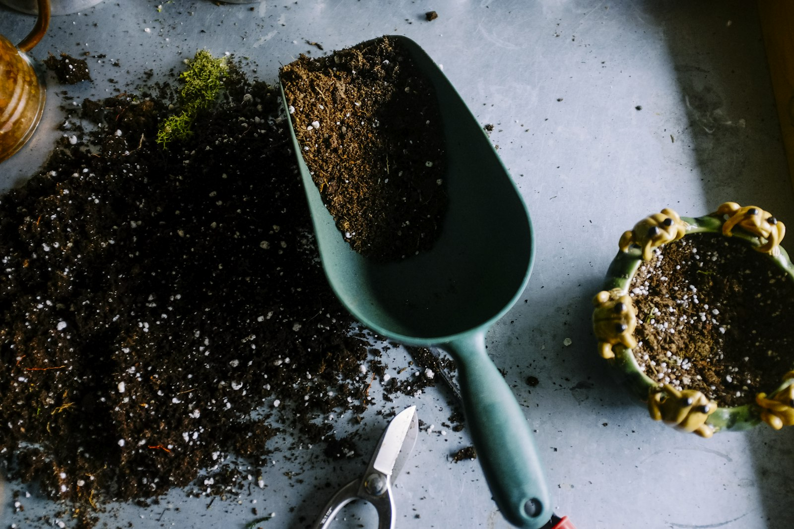

The guide library
Good dirt.
Simple projects.
Nine beginner-friendly projects for balconies, back gardens, and bright windowsills. Each one has a supply list, clear steps, and a realistic idea of how long it takes.
 Herbs
Herbs
The 5-pot balcony herb garden
Basil, mint, rosemary, thyme, and parsley — a summer of flavour from one sunny corner.
Read the guide Vegetables
Vegetables
Build a no-dig veggie bed
Feed the soil from above, skip the back-breaking digging, and grow more with less fuss.
Read the guide Flowers
Flowers
A pollinator pot that actually works
One generous pot of flowers can become a reliable pit stop for bees and butterflies.
Read the guide Seed starting
Seed starting
Start seeds without a greenhouse
A warm windowsill, a clean tray, and a little patience are enough to raise your own seedlings.
Read the guide Small space
Small space
Compost for small spaces
A lidded bin can turn kitchen scraps and garden trimmings into dark, crumbly compost.
Read the guide
Small spaceGrow salad in a window box
Cut-and-come-again leaves from a 60cm box, with a little shade for the hottest weeks.
Read the guideA cut-flower corner
One square metre of annuals can fill a surprising number of vases. Cut often, enjoy more.
Read the guide Indoors
Indoors
The no-fail houseplant reset
Check the roots, clean the leaves, sort the light, and stop overwatering. Most plants recover.
Read the guide Vegetables
Vegetables
Feed your soil, not just your plants
Top-dress, mulch, and keep the soil covered. Healthy soil grows healthy plants with less fuss.
Read the guideNo guides found.
Try a different filter or search term. There is probably a pot for that.